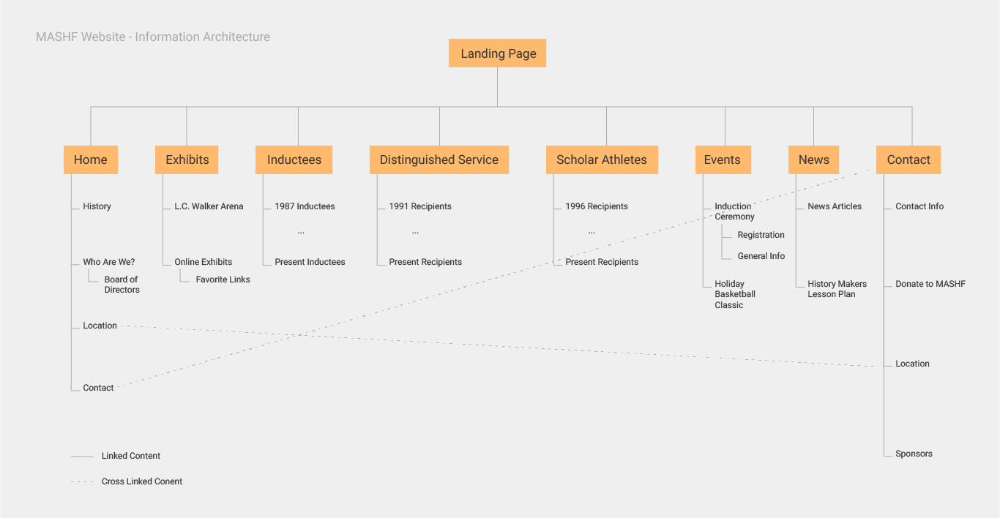
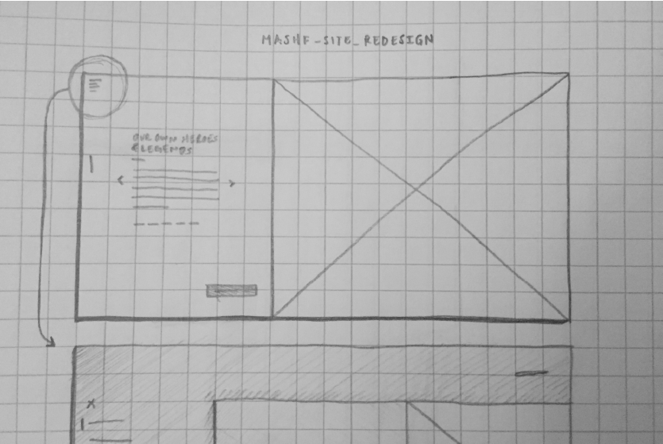
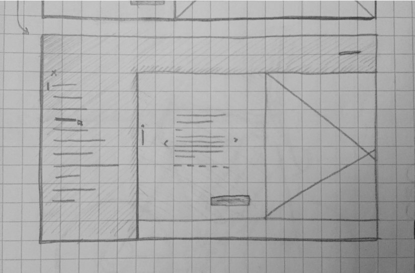
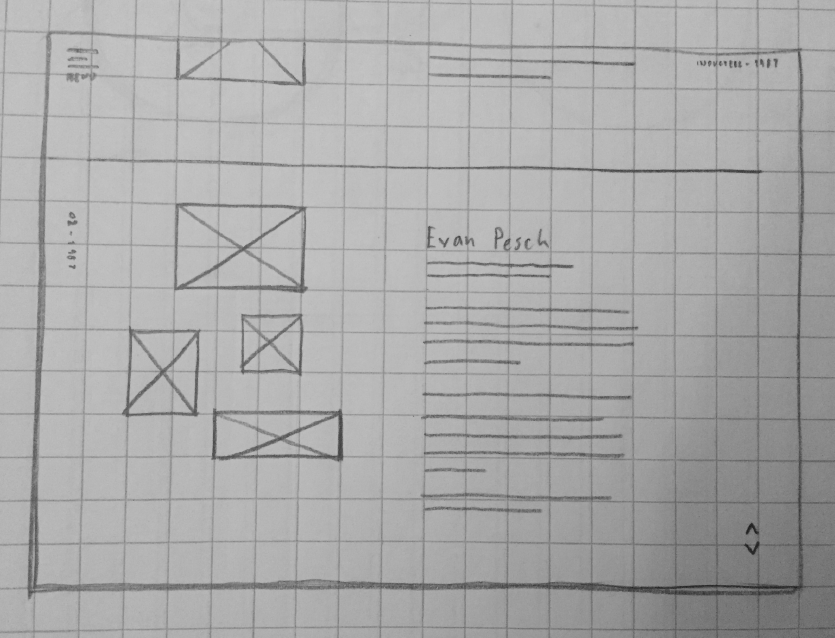
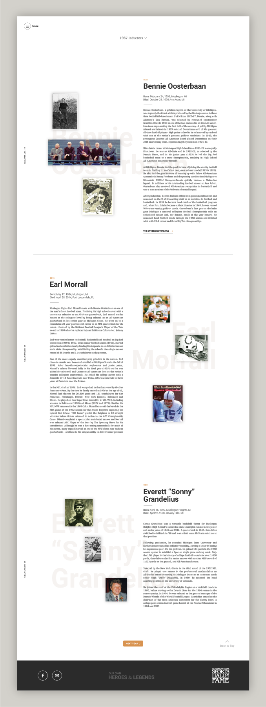

Muskegon Area Sports Hall of Fame, Work in Progress

Project Type: UX/UI Design
Date: April 2016 - Present
Role: User Experience Designer/Web Developer
Work Setting: Individual project with oversight from previous web developer
Goal: Update the MASHF website to appeal to current design standards and focus on accessibility for older users
The Project
Overview
The Muskegon Area Sports Hall of Fame was established in 1986 to honor the hometown heroes and legends from the city and surrounding areas of Muskegon, Michigan. When I was approached about redesigning and rebuilding the organization's website in 2016, I began to look over the existing site. Three things seemed to be the major pain points that I set out to focus on:
1) Clustered and complex information architecture 2) Unclear awareness of the sites primary audience 3) Outdated and unappealing visual design
With these points in mind, I set out to not only update the user experience of the site, but also revise the visual identity of the organization.
The Process
Target Audience
For this project, I decided to design for an older audience between the ages of 50-70. This is the primary age group of those that manage and organize the MASHF organization and those that attend the organizations events.
With this in mind, a main area of focus for my design work was to design with accessibility in mind. The site needs to work simply for people with poor eyesight, low technological savviness, etc.
Aside from accessibility, the general construction of the site should take into account the technology that many of these users are using. Older computers, older browsers, and slower technology in general can drastically affect how someone will perceive the site. I have to keep this in mind when constructing the site in order to provide the most seamless user experience as possible.
Throughout the design phase, I have taken the mindset that if this site works well for the older crowd that I am designing for, it should work well for younger crowds as well. Of course, this is a subjective viewpoint. Validation through UX research will either confirm of contrast this assumption.
Information Architecture
The complex, often unnecessarily difficult, information architecture needed revising. In the initial phases of this project, I set forth to organize all of the necessary pages of this site into more intuitive categories in order to simplify the user flow.
Wireframes
  Designing Something Familiar
Designing for an older audience can be a challenge when attempting to work with current design practices and trends. My solution? Draw design cues from something familiar to this audience: newspapers and magazine articles. While my design compositions are not necessarily timeless, they pull inspiration from designs and layouts that have stood the test of time.
Why is this project taking so long?
Good question. The answer: I learned basically everything I know about user experience design and user interface design in the two years after I was given the project. I was constantly revising this project to construct a more user-friendly site by applying the things that I learned throughout my education in user experience design. Fortunately, the MASHF organization understands this and has been very flexible on the project.
While I am never done learning, I have now reached a place where I can confidently move forward with my design and development process.